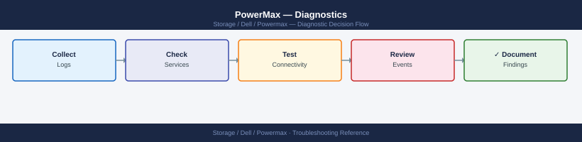
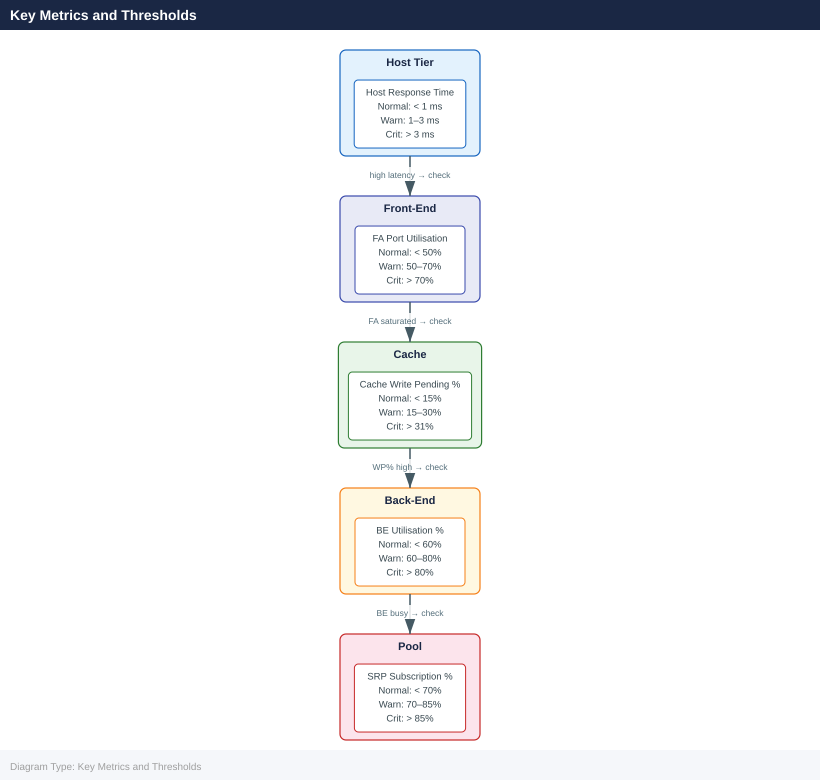

PowerMax — Diagnostics¶

Before you begin¶
- Access: Storage admin credentials (cluster admin or equivalent)
- Gather first: recent error message text, event timestamps, and affected object names
- Scope: confirm whether the issue affects a single object, host, cluster, or site
- Escalation: open a vendor support ticket before running any destructive step
- Logging: document each command and output — required if escalation is needed
Diagnostic Commands¶
# Full array health summary
symcfg -sid <SID> show
# List all director and port states
symcfg -sid <SID> list -dir all
# Query SRDF pair state for a specific RDF group
symrdf -sid <SID> -rdfg <group> query
# List all SRDF groups and their pair counts
symdf list -sid <SID>
# List SnapVX snapshots for a storage group
symsnap list -sid <SID> -sg <storage-group>
# Check physical drive state
sympd list -sid <SID>
# Show thin pool capacity
symcfg -sid <SID> -pool <pool-name> show
# Show real-time I/O statistics
symstat -sid <SID> -type rw -i 5 -c 6
# List masking views and their components
symmaskdb -sid <SID> list database
# Show host login (initiator) visibility per port
symmask -sid <SID> list logins
Symmetrix ID: 000123456789012
Array Model: PowerMax 2000
Microcode Version: 5978.1221.1221
System Capacity: 450.2 TB
Usable Capacity: 425.8 TB
Reserved Capacity: 24.4 TB
Array Health: Healthy
Director Port Status Type Speed
FA-1D 0 Online Fibre 16Gb
FA-1D 1 Online Fibre 16Gb
FA-2D 0 Online Fibre 16Gb
FA-2D 1 Online Fibre 16Gb
SE-1D 0 Online SAS 12Gb
...
RDF Group: 1
Pair State: Synchronized
Pair Count: 12
Local SID: 000123456789012
Remote SID: 000987654321098
RDF Group Pair Count State
1 12 Synchronized
2 8 Synchronized
3 5 Synchronized
Snapshot ID Storage Group Created Tracks
snap_001 prod_sg_01 2024-01-15 14:32:18 2048
snap_002 prod_sg_01 2024-01-15 10:15:42 1024
Physical Drive Slot Status Capacity Type
DAE0_Slot_0 0 Online 1.92 TB SSD
DAE0_Slot_1 1 Online 1.92 TB SSD
DAE0_Slot_2 2 Online 1.92 TB SSD
...
Pool Name: SSD_Pool_01
Total Capacity: 125.4 TB
Allocated Capacity: 98.7 TB
Available Capacity: 26.7 TB
Percent Full: 78.7%
Timestamp Read MB/s Write MB/s Read IOs/s Write IOs/s
2024-01-15 15:42:10 1245.3 892.4 18432 12156
2024-01-15 15:42:15 1198.7 915.2 17891 12489
2024-01-15 15:42:20 1267.4 878.9 18756 11923
Masking View Initiator Group Port Group Storage Group
MV_PROD_HOST01 IG_HOST01 PG_FA_1D_0_1 SG_PROD_01
MV_PROD_HOST02 IG_HOST02 PG_FA_2D_0_1 SG_PROD_02
MV_TEST_HOST03 IG_TEST_HOST03 PG_FA_1D_0 SG_TEST_01
Port Initiator WWN Status Logins
FA-1D:0 50:00:14:40:1a:2b:3c:4d Online 4
FA-1D:1 50:00:14:40:1a:2b:3c:4e Online 2
FA-2D:0 50:00:14:40:1a:2b:3c:4f Online 6
Common errors
**`SYMCFG-00001
Log Locations¶
| Log | Location | Notes |
|---|---|---|
| Solutions Enabler daemon log | /var/symapi/log/se_deamons.log (Linux) |
Main SE service log; check for connection and authentication errors |
| SYMCLI command log | /var/symapi/log/ |
Per-command log files created for each SYMCLI invocation |
| Unisphere application log | Unisphere vApp → /var/log/emc/ |
Web service and API errors |
| Array sysmgr log | Accessible via Dell Support remote session | Internal array operating system logs; not user-accessible |
| Audit log (SYMCLI) | symevent -sid <SID> list |
Records all configuration change events on the array |
Performance Analysis¶
Quick Performance Check (SYMCLI)¶
# Storage Group I/O stats — snapshot
symstat -sid <sid> list -type sg
# Device-level stats — identify hot volumes
symstat -sid <sid> list -type dev | sort -k4 -rn | head -20 # sort by read IOPS
# Cache write pending — should stay below 31%
symstat -sid <sid> list -type cache | grep -E "WP|Write Pending"
# Front-end port utilisation
symstat -sid <sid> list -type port | grep -v "^$" | sort -k5 -rn | head -10
Storage Group I/O Statistics
SID: 000297123456789
Name Reads/sec Writes/sec Read MB/s Write MB/s Utilization
PROD_DB_SG 4521 2847 287.3 156.2 78%
BACKUP_SG 1203 892 45.1 32.8 34%
DEV_TEST_SG 156 203 8.4 11.2 12%
...
Device-Level Hot Volumes (Top 20 by Read IOPS)
Dev# SID RDF Reads/sec Writes/sec Read MB/s Write MB/s Queue
0045 000297123456789 N 8934 1203 567.8 78.4 2
0127 000297123456789 N 7821 945 501.2 61.3 1
0089 000297123456789 Y 6543 2134 412.1 145.7 3
0234 000297123456789 N 5612 678 356.9 43.2 0
...
Cache Write Pending Statistics
WP Percent: 18.2%
Write Pending MB: 2847
Write Pending Percent: 18.2%
Cache Hit Ratio: 94.3%
Front-End Port Utilization (Top 10)
Port Director Protocol Speed Utilization% Reads/sec Writes/sec
FA-7E 14e FC 16Gb 87.3 12456 8934
FA-6D 13d FC 16Gb 81.2 10234 7123
FA-8F 15f iSCSI 10Gb 76.5 9876 6543
FA-5C 12c FC 16Gb 72.1 8765 5432
...
Common errors
symstat: Error: Invalid SID format or SID not found — Verify the SID is correct and the array is online by running symcfg list -v.
symstat: Error: Command not found — Ensure Symmetrix CLI tools are installed and the $PATH includes the Symm CLI bin directory (typically /opt/emc/SYMCLI/bin).
symstat: Error: Access denied — insufficient privileges — Run the commands with sudo or ensure your user is in the symcli group via usermod -aG symcli $USER.
Key Metrics and Thresholds¶

| Metric | Normal | Warning | Critical |
|---|---|---|---|
| Read Response Time | < 1 ms | 1–3 ms | > 3 ms |
| Write Response Time | < 1 ms | 1–3 ms | > 3 ms |
| Cache Write Pending % | < 15% | 15–30% | > 31% |
| SRP Subscription % | < 70% | 70–85% | > 85% |
| FA Port Utilisation % | < 50% | 50–70% | > 70% |
| BE Utilisation % | < 60% | 60–80% | > 80% |
Continuous Monitoring¶
# Monitor SG stats every 30 seconds for 10 minutes
symstat -sid <sid> list -type sg -i 30 -c 20
# Monitor a specific device
symstat -sid <sid> list -type dev -devn <devname> -i 10 -c 30
# Monitor cache in real time
symstat -sid <sid> list -type cache -i 30
Symmetrix ID: 000297900001
I/O Rate MB/Rate Cache Hit% Read Hit% Write Hit%
SG Name Read Write Read Write Read Write Read Write Read Write
─────────────────────────────────────────────────────────────────────────────
SG_PROD_DB 1247 892 4521 3156 87.2 91.4 89.1 85.3 92.7
SG_BACKUP_01 234 156 821 512 72.1 68.9 75.4 70.2 67.1
SG_VMWARE_TIER1 892 1034 3214 4102 93.8 94.2 95.1 92.8 95.6
SG_TEST_DEV 145 89 512 301 61.2 58.7 64.3 59.1 58.2
SG_ARCHIVE 23 12 78 45 45.1 42.3 48.2 40.1 44.5
...
Symmetrix ID: 000297900001
Device Name: DEV001
I/O Rate MB/Rate Response Time(ms)
Timestamp Read Write Read Write Read Write Queue
─────────────────────────────────────────────────────────────────
14:32:15 456 234 1821 945 2.3 1.8 0
14:32:25 512 267 2045 1067 2.1 1.9 1
14:32:35 489 245 1956 981 2.4 1.7 0
14:32:45 534 289 2134 1156 2.2 2.0 2
Symmetrix ID: 000297900001
Cache Statistics (Real-Time)
─────────────────────────────────────────────────────────────
Total Cache Size: 384 GB
Cache Used: 287 GB (74.7%)
Read Cache Hit %: 89.2
Write Cache Hit %: 91.8
Dirty Pages: 12.4 GB
Clean Pages: 274.6 GB
Cache Flush Rate: 1247 MB/s
Common errors
symstat: Error: Invalid SID <sid> — Replace <sid> with the actual Symmetrix ID (e.g., 000297900001).
symstat: Error: Device <devname> not found in array — Verify the device name exists in the array using symdev list -sid <sid> and use the correct device identifier.
symstat: command not found — Ensure the EMC Solutions Enabler package is installed and the $SYMCLI_PATH environment variable is set correctly.
Identify Performance Issues¶
# High latency investigation — find the busiest SGs
symstat -sid <sid> list -type sg | sort -k6 -rn | head -10 # sort by response time
# Back-end busy — check disk group saturation
symstat -sid <sid> list -type be | sort -k5 -rn | head -10
# SRDF impact — RDF director stats
symstat -sid <sid> list -type rdf
# Host sending too many IOPS — check IG → SG → device mapping
symaccess show view <view_name> -sid <sid>
Storage Group Avg Response Time(ms) Total IOs Queue Depth
SG_PROD_DB_01 45.2 1,245,632 12
SG_PROD_APP_02 38.7 987,451 8
SG_BATCH_NIGHTLY 32.1 654,321 5
SG_DEV_TEST_03 28.5 432,198 3
SG_ARCHIVE_TIER2 22.3 198,765 2
Back-End Director Utilization(%) Pending IOs Avg Service Time(ms)
BE_DIR_0 87.3 156 12.4
BE_DIR_1 84.1 142 11.8
BE_DIR_2 79.6 128 10.9
BE_DIR_3 71.2 94 8.7
RDF Director Stats:
RDF_DIR_0 Link Status: OPTIMAL Throughput(MB/s): 245.6 Latency(ms): 3.2
RDF_DIR_1 Link Status: OPTIMAL Throughput(MB/s): 198.3 Latency(ms): 2.9
Symmetrix ID: 000296802151
View Name: PROD_HOSTS_VIEW
Initiator Group Storage Group Device
IG_PROD_LINUX_01 SG_PROD_DB_01 dev_001-dev_050
IG_PROD_LINUX_02 SG_PROD_APP_02 dev_051-dev_100
IG_PROD_WINDOWS_01 SG_PROD_DB_01 dev_001-dev_050
Common errors
symstat: Error: Invalid Symmetrix ID <sid> — Replace <sid> with the actual array serial number (e.g., 000296802151) or verify connectivity with symcfg list -v.
symaccess: Error: View <view_name> not found — Confirm the view name exists by running symaccess list view -sid <sid> to see all available views.
Unisphere for PowerMax Performance Dashboard¶
Unisphere provides 7-day rolling performance history: - System → Performance → Array — overall throughput and latency - System → Performance → Storage Group — per-SG response time, IOPS, MB/s - System → Performance → Port — per-FA-port utilisation and I/O count - Alert Policies — set thresholds to generate email/SNMP alerts
Dell CloudIQ¶
CloudIQ provides longer-term performance trending (30+ days) and anomaly detection: - Automatically collects metrics from connected PowerMax arrays - Latency forecasting and proactive alerts - Cross-array comparison and capacity planning - Access via cloudiq.dell.com
Performance Data for TAC¶
# Collect 15-minute perf data for all subsystems
for type in sg dev dir be cache rdf port; do
symstat -sid <sid> list -type $type -i 60 -c 15 > /tmp/powermax-${type}-perf-$(date +%Y%m%d).txt &
done
wait
tar czf /tmp/powermax-perf-$(date +%Y%m%d).tar.gz /tmp/powermax-*-perf-*.txt
Collecting performance data for sg...
Collecting performance data for dev...
Collecting performance data for dir...
Collecting performance data for be...
Collecting performance data for cache...
Collecting performance data for rdf...
Collecting performance data for port...
(all background jobs complete)
/tmp/powermax-perf-20240315.tar.gz created successfully
Common errors
symstat: Error: Invalid SID <sid> — Replace <sid> with the actual PowerMax array SID (e.g., 000123456789).
symstat: Error: User does not have permission to execute command — Run the script with appropriate credentials or use sudo if the user lacks symstat privileges.
tar: /tmp/powermax-*-perf-*.txt: No such file or directory — Verify that symstat commands completed successfully and output files exist in /tmp/ before the tar command executes.
Before Calling Support¶
Collect the following before opening a Dell Support case:
- Symmetrix SID:
symcfg list - PowerMaxOS version:
symcfg -sid <SID> show | grep -i "microcode" - Solutions Enabler version:
symcli -version - Full array health output:
symcfg -sid <SID> show > array_health.txt - SRDF group state (if replication issue):
symrdf -sid <SID> -rdfg <group> query > srdf_state.txt - Director/port status:
symcfg -sid <SID> list -dir all > director_status.txt - Recent Unisphere alerts: export from Unisphere → Alerts → Export
- Symptom description, time of first occurrence, and business impact
Use Dell SupportAssist (if licensed) to automatically collect and upload diagnostic bundles: accessible from Unisphere → System → SupportAssist.
Verify resolution¶
- Confirm the original symptom no longer occurs
- Check logs for any residual errors related to the issue
- Monitor for 10–15 minutes to confirm the fix is stable